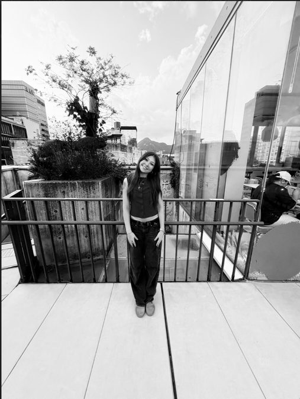
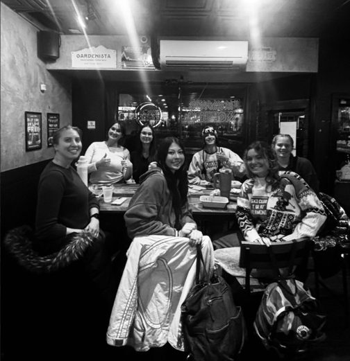
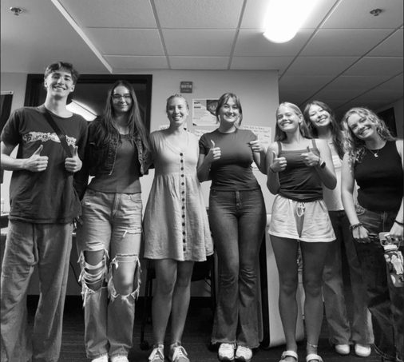
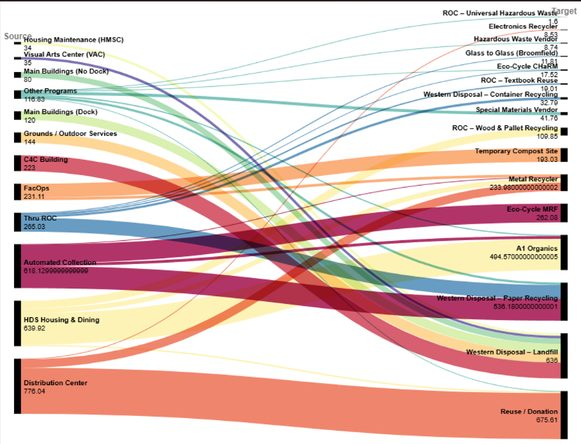
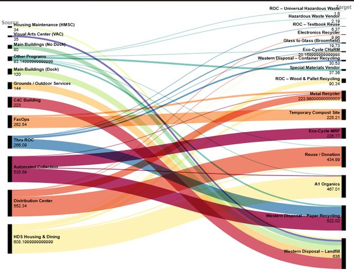
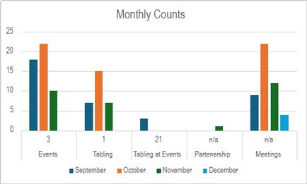
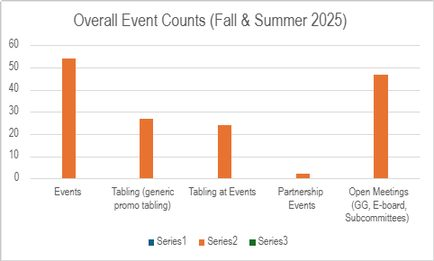
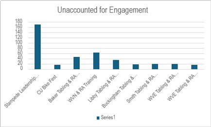

MOST RECENT
Total Rewards Intern
Charles Schwab
Summer 2026
- Supported the Total Rewards team across compensation and benefits programs.
PORTFOLIO · 2026

Data Analyst · Information Science + UX at CU Boulder · Former Total Rewards Intern at Charles Schwab
01 — ABOUT
I’m a senior at CU Boulder studying Information Science with a UX Certificate, focused on using data to drive real decisions.
This past summer I joined Charles Schwab as a Total Rewards Intern. On campus, I work two roles at the CU Boulder Environmental Center — Director Assistant & Data Analyst, and Promotions Assistant — analyzing outreach campaign performance, tracking event engagement, and mapping campus sustainability efforts.
I’m drawn to roles at the intersection of data and human behavior, where the story in the numbers shapes what comes next.


Schwab
TOTAL REWARDS INTERN
2.5+ yrs
AT THE ENVIRONMENTAL CENTER
6,234 t
CAMPUS WASTE DATA MAPPED
May 2027
EXPECTED GRADUATION
02 — EXPERIENCE
Charles Schwab
Summer 2026
CU Boulder Environmental Center
Jan 2024 – Present · Boulder, CO
CU Boulder Environmental Center
Jan 2024 – Present · Boulder, CO
03 — SKILLS
B.S. Information Science, UX Certificate — University of Colorado Boulder, expected May 2027. Coursework: Statistics for Information Science, Programming I & II (Python), Quantitative Reasoning, Designing Interactions, Wireframing & Research.
04 — PROJECTS
DATA VISUALIZATION · EXCEL · SANKEY
Collected and organized two years of campus waste data in Excel — 2,952.47 metric tons in 2023 and 3,281.4 in 2024 — mapping material flows across landfill, compost and recycling streams into Sankey diagrams that support CU’s sustainability planning.


DATA ANALYSIS · EXCEL · OUTREACH STRATEGY
Compiled and analyzed attendance and engagement data across Environmental Center events, identifying turnout trends by program type and timeframe to inform future outreach strategy.



05 — CONTACT
I’m looking for data analytics roles, internships and research opportunities — especially in sustainability, UX, people analytics or mission-driven organizations.
© 2026 Mikayla Helms · Boulder, CO